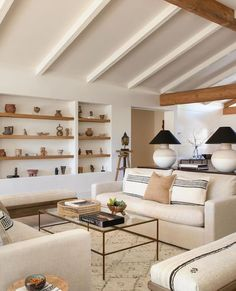
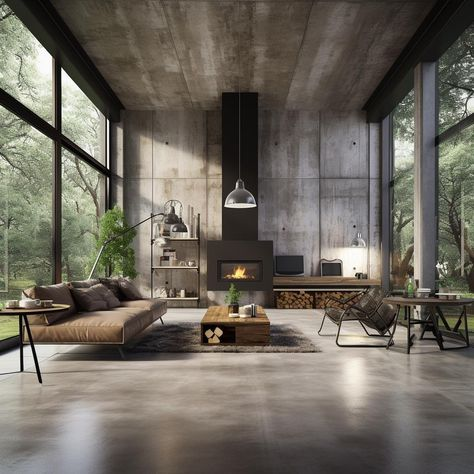
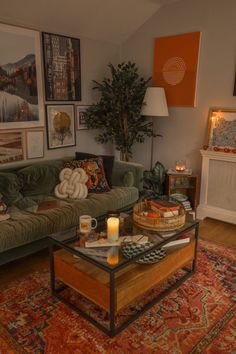
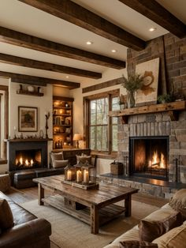
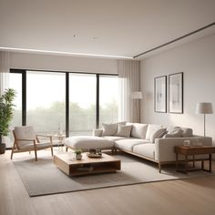
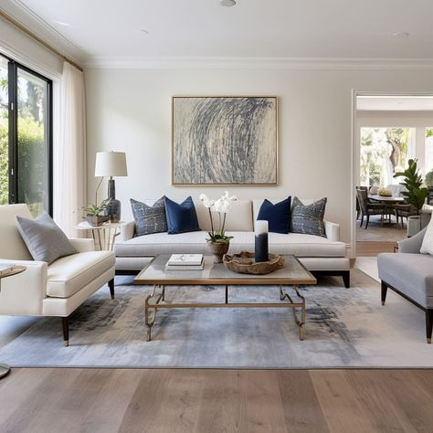
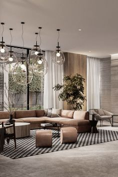

ESTILO MINIMALISTA

ESTILO INDUSTRIAL

ESTILO NORDICO
ESTILO BOHEMIO

ESTILO RUSTICO

ESTILO MODERNO

ESTILO CLASICO

ESTILO CONTEMPORANEO

El diseño minimalista se caracteriza por la simplicidad y la eliminación de elementos innecesarios. Predomina el uso de colores neutros, espacios en blanco, y formas limpias y simples. Menos es más en este estilo.
El diseño industrial se inspira en fábricas y almacenes. Usa materiales como el metal, el ladrillo expuesto, y la madera recuperada. Los espacios suelen tener techos altos, tuberías a la vista y una paleta de colores neutros.
El diseño nordico es conocido por su funcionalidad, simplicidad y conexión con la naturaleza. Utiliza materiales naturales, colores claros, y líneas limpias. Es un estilo acogedor y luminoso.
El estilo bohemio es ecléctico y libre, combinando una variedad de colores, texturas y patrones. Es común ver una mezcla de muebles vintage y elementos decorativos de diferentes culturas.
El diseño rústico se inspira en la naturaleza y la vida rural. Utiliza materiales naturales como la madera y la piedra, colores cálidos y elementos envejecidos. Crea un ambiente acogedor y hogareño.
El estilo moderno se caracteriza por líneas limpias, espacios abiertos y funcionalidad. Usa una paleta de colores neutros y materiales como el metal, el vidrio y el acero. Es elegante y sin adornos innecesarios.
El diseño clásico es atemporal y elegante. Utiliza muebles y decoraciones de inspiración histórica, colores ricos y materiales lujosos. Es un estilo sofisticado y formal.
El estilo contemporáneo está en constante cambio, reflejando las tendencias actuales. Combina elementos de varios estilos, con un énfasis en la funcionalidad y la simplicidad. Usa una paleta de colores neutros con toques de color.